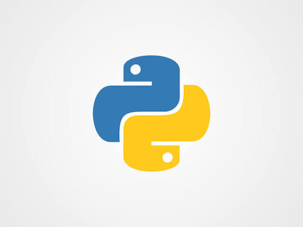

Quem eu sou?
Me chamo Arthur Xavier, tenho 23 anos e atualmente curso Engenharia de Software na UniBH. Trabalho na área de Análise de Dados, buscando utilizar a tecnologia para transformar dados em informações úteis.
Tenho interesse em programação, banco de dados, automação e desenvolvimento de sistemas. Estou sempre buscando aprender novas tecnologias e desenvolver minhas habilidades profissionais.
Conhecimentos e habilidades
ANÁLISE DE DADOS
Análise e organização de dados para gerar informações e auxiliar na tomada de decisões.

PYTHON
Utilização de Python para programação, automação e manipulação de dados.
SQL
Conhecimentos em bancos de dados e consultas utilizando SQL.
Sou estudante de Engenharia de Software e atuo atualmente com Análise de Dados. Durante minha formação, venho desenvolvendo conhecimentos em programação, banco de dados, desenvolvimento de sistemas e tecnologias relacionadas à área.
Meu objetivo é continuar evoluindo profissionalmente, adquirindo experiência e utilizando a tecnologia para resolver problemas e criar soluções eficientes.
Desde 2003
Sempre buscando aprender, evoluir e dar o meu melhor.
Atualmente, meu foco está em Engenharia de Software, Análise de Dados e desenvolvimento de novas habilidades na área de tecnologia.
Meus objetivos
TECNOLOGIA
Aprender novas ferramentas e acompanhar a evolução da tecnologia.
CARREIRA
Desenvolver minha experiência profissional e crescer na área de tecnologia.
APRENDIZADO
Buscar constantemente novos conhecimentos e aprimorar minhas habilidades.